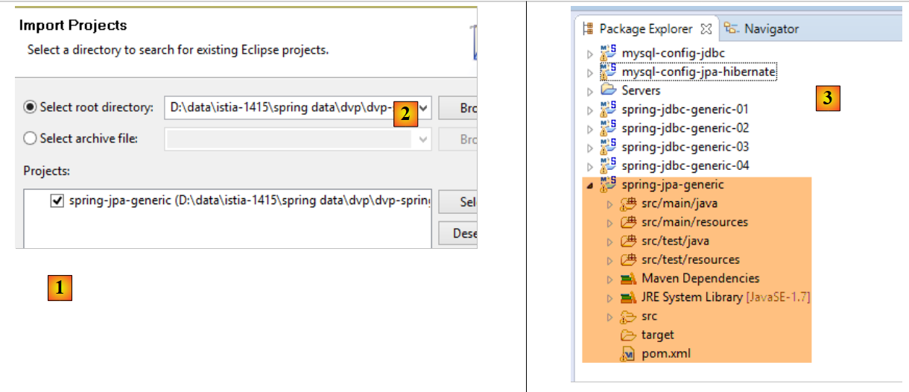
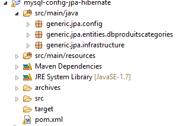
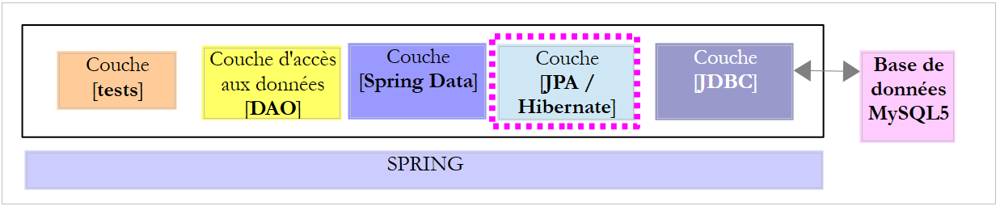
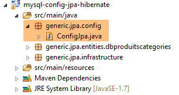
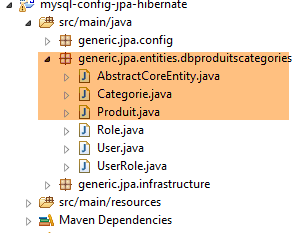
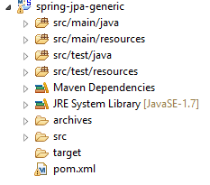

6. Spring Data JPA Hibernate
6.1. Einführung
Wir werden die vom Projekt [spring-jdbc-04] verwaltete Datenbank [dbproduitscategories] verwenden und die beiden in diesem Projekt definierten Schnittstellen [IDao<Category>, IDao<Product>] implementieren. Dies ermöglicht uns mehrere Dinge:
- den Implementierungscode vergleichen;
- die gleiche Testschicht verwenden;
- die Leistung der beiden Implementierungen vergleichen;
 |
- Die [JDBC]-Schicht wird durch das in Abschnitt 3.3 beschriebene Projekt [mysql-config-jdbc] implementiert;
Wir wenden uns nun den anderen Schichten zu.
6.2. Einrichten der Arbeitsumgebung
Importieren Sie mit STS das Projekt [mysql-config-jpa-hibernate] [1] aus dem Ordner [<examples>/spring-database-config/mysql/eclipse] [2]:
 |
Dieses Projekt konfiguriert die [Spring JPA Hibernate]-Schicht des Projekts. Jede JPA-Implementierung verfügt über ein eigenes Konfigurationsprojekt.
Importieren Sie als Nächstes das Projekt [spring-jpa-generic] [1] aus dem Ordner [<examples>/spring-database-generic/spring-jpa] [2]:
 |
Aktualisieren Sie anschließend die Maven-Umgebung (Alt-F5) für alle Projekte im [Package Explorer]:
 |
Führen Sie anschließend zur Überprüfung der Arbeitsumgebung die Build-Konfiguration mit dem Namen [spring-jpa-generic-JUnitTestDao-hibernate] aus:
 |
Diese Konfiguration führt den Test [JUnitTestDao] aus. Dieser Test sollte erfolgreich sein:
 |
6.3. Das Projekt zur Konfiguration der JPA-Schicht
 |
Ziel dieses Projekts ist es, die JPA-Schicht der unten dargestellten Architektur zu konfigurieren:
 |
6.3.1. Maven-Konfiguration
Das Projekt ist ein Maven-Projekt, das durch die folgende [pom.xml]-Datei konfiguriert wird:
<project xsi:schemaLocation="http://maven.apache.org/POM/4.0.0 http://maven.apache.org/xsd/maven-4.0.0.xsd"
xmlns="http://maven.apache.org/POM/4.0.0" xmlns:xsi="http://www.w3.org/2001/XMLSchema-instance">
<modelVersion>4.0.0</modelVersion>
<groupId>dvp.spring.database</groupId>
<artifactId>generic-config-jpa</artifactId>
<version>0.0.1-SNAPSHOT</version>
<name>configuration mysql openjpa</name>
<parent>
<groupId>org.springframework.boot</groupId>
<artifactId>spring-boot-starter-parent</artifactId>
<version>1.2.3.RELEASE</version>
</parent>
<dependencies>
<!-- dépendances variables ********************************************** -->
<!-- JPA provider -->
<dependency>
<groupId>org.hibernate</groupId>
<artifactId>hibernate-entitymanager</artifactId>
</dependency>
<!-- dépendances constantes ********************************************** -->
<!-- Spring Data -->
<dependency>
<groupId>org.springframework.data</groupId>
<artifactId>spring-data-jpa</artifactId>
</dependency>
<!-- Spring Context -->
<!-- configuration JDBC inherited -->
<dependency>
<groupId>dvp.spring.database</groupId>
<artifactId>generic-config-jdbc</artifactId>
<version>0.0.1-SNAPSHOT</version>
<exclusions>
<exclusion>
<groupId>org.springframework.boot</groupId>
<artifactId>spring-boot-starter-jdbc</artifactId>
</exclusion>
</exclusions>
</dependency>
</dependencies>
<properties>
<project.build.sourceEncoding>UTF-8</project.build.sourceEncoding>
<java.version>1.7</java.version>
</properties>
<build>
<plugins>
<plugin>
<groupId>org.apache.maven.plugins</groupId>
<artifactId>maven-surefire-plugin</artifactId>
<version>2.18.1</version>
</plugin>
</plugins>
</build>
</project>
- Zeilen 5–7: das von diesem Projekt generierte Maven-Artefakt. Die Konfigurationsprojekte für die anderen JPA-Implementierungen (Eclipselink und OpenJpa) verwenden dasselbe Artefakt. Das bedeutet, dass zu jedem Zeitpunkt nur eines dieser Projekte aktiv sein kann. Sie sollten daher vermeiden, dass alle im [Package Explorer] vorhanden sind. Es wird nur eines benötigt;
- Zeilen 10–14: das übergeordnete Maven-Projekt, das die Versionen der meisten vom Projekt benötigten Abhängigkeiten festlegt;
- Zeilen 19–22: die Hibernate-Bibliothek;
- Zeilen 25–28: die Spring-Data-Bibliothek;
- Zeilen 32–34: Das JPA-Layer-Konfigurationsprojekt stützt sich auf das JDBC-Layer-Konfigurationsprojekt, das unter anderem den JDBC-Treiber für das verwendete DBMS und die Datenbankverbindungsdetails definiert;
- Zeilen 35–39: Das Konfigurationsprojekt der JDBC-Schicht enthält die [Spring JDBC]-Bibliothek, die hier durch die [Spring Data JPA]-Bibliothek ersetzt wird. Daher legen wir fest, dass sie nicht in die Projektabhängigkeiten aufgenommen wird. Bleibt sie jedoch erhalten, verursacht dies keine Fehler;
Letztendlich sehen die Projektabhängigkeiten wie folgt aus:
 |
6.3.2. Spring-Konfiguration
 |
Die Klasse [ConfigJpa] konfiguriert das Spring-Projekt:
package generic.jpa.config;
import javax.persistence.EntityManagerFactory;
import generic.jdbc.config.ConfigJdbc;
import org.apache.tomcat.jdbc.pool.DataSource;
import org.springframework.context.annotation.Bean;
import org.springframework.context.annotation.Configuration;
import org.springframework.context.annotation.Import;
import org.springframework.orm.jpa.JpaTransactionManager;
import org.springframework.orm.jpa.JpaVendorAdapter;
import org.springframework.orm.jpa.LocalContainerEntityManagerFactoryBean;
import org.springframework.orm.jpa.vendor.Database;
import org.springframework.orm.jpa.vendor.HibernateJpaVendorAdapter;
import org.springframework.transaction.PlatformTransactionManager;
@Configuration
@Import({ ConfigJdbc.class })
public class ConfigJpa {
// the provider JPA
@Bean
public JpaVendorAdapter jpaVendorAdapter() {
HibernateJpaVendorAdapter hibernateJpaVendorAdapter = new HibernateJpaVendorAdapter();
hibernateJpaVendorAdapter.setShowSql(false);
hibernateJpaVendorAdapter.setDatabase(Database.MYSQL);
hibernateJpaVendorAdapter.setGenerateDdl(true);
return hibernateJpaVendorAdapter;
}
// JPA entity packages
public final static String[] ENTITIES_PACKAGES = { "generic.jpa.entities.dbproduitscategories" };
// data source
@Bean
public DataSource dataSource() {
// data source TomcatJdbc
DataSource dataSource = new DataSource();
// configuration access JDBC
dataSource.setDriverClassName(ConfigJdbc.DRIVER_CLASSNAME);
dataSource.setUsername(ConfigJdbc.USER_DBPRODUITSCATEGORIES);
dataSource.setPassword(ConfigJdbc.PASSWD_DBPRODUITSCATEGORIES);
dataSource.setUrl(ConfigJdbc.URL_DBPRODUITSCATEGORIES);
// initially open connections
dataSource.setInitialSize(5);
// result
return dataSource;
}
// EntityManagerFactory
@Bean
public EntityManagerFactory entityManagerFactory(JpaVendorAdapter jpaVendorAdapter, DataSource dataSource) {
LocalContainerEntityManagerFactoryBean factory = new LocalContainerEntityManagerFactoryBean();
factory.setJpaVendorAdapter(jpaVendorAdapter);
factory.setPackagesToScan(ENTITIES_PACKAGES);
factory.setDataSource(dataSource);
factory.afterPropertiesSet();
return factory.getObject();
}
// Transaction manager
@Bean
public PlatformTransactionManager transactionManager(EntityManagerFactory entityManagerFactory) {
JpaTransactionManager txManager = new JpaTransactionManager();
txManager.setEntityManagerFactory(entityManagerFactory);
return txManager;
}
}
- Zeile 18: Die Klasse ist eine Spring-Konfigurationsklasse;
- Zeile 19: Sie importiert die Beans, die von der Konfigurationsklasse [ConfigJdbc] definiert wurden, die zur Konfiguration des Spring-Projekts [mysql-config-jdbc] verwendet wird. Dies sind die JSON-Filter;
- Zeilen 23–30: definieren die verwendete JPA-Implementierung, in diesem Fall die Hibernate-Implementierung (Zeile 25);
- Zeile 26: Sie können wählen, ob die von der Hibernate-Implementierung ausgeführten SQL-Operationen angezeigt werden sollen oder nicht;
- Zeile 27: gibt das mit Hibernate verbundene DBMS an. Diese Konfiguration ist wichtig. Sie ermöglicht es Hibernate, den SQL-Dialekt des MySQL-DBMS zu verwenden, einschließlich seiner proprietären Funktionen. Darüber hinaus informiert sie Hibernate über die SQL-Typen und DBMS-Objekte, die es verwenden kann. Es ist diese Fähigkeit der JPA-Implementierung, sich an ein bestimmtes DBMS anzupassen, die ihr eine hohe Portabilität über verschiedene DBMS hinweg verleiht;
- Zeile 28: Hibernate kann die Tabellen für die Zieldatenbank aus den gefundenen JPA-Entitäten generieren oder auch nicht. Diese Generierung findet nur statt, wenn die Tabellen nicht vorhanden sind. Wenn sie bereits existieren, wird nichts unternommen. Wir werden diese Fähigkeit zur Tabellengenerierung nutzen, wenn wir demonstrieren, wie die SQL-Generierungsskripte für die verschiedenen in diesem Dokument verwendeten Datenbanken erstellt wurden;
- Zeile 33: das Paket, das die JPA-Entitäten für die Datenbank [dbproduitscategories] enthält;
- Zeilen 36–49: Die Datenquelle [tomcat-jdbc], die mit der Datenbank [dbproduitscategories] verknüpft ist;
- Zeilen 52–60: Die Bean mit dem Namen [entityManagerFactory] (sie muss so benannt sein) ist die Bean, die das [EntityManager]-Objekt erstellt, welches den JPA-Persistenzkontext verwaltet. Alle JPA-Operationen laufen über dieses Objekt. Da wir [Spring Data JPA] verwenden, werden wir dieses Objekt selbst nie nutzen. Wir müssen es jedoch konfigurieren. Es muss Folgendes wissen:
- die verwendete JPA-Implementierung (Zeile 55);
- die verwendete Datenquelle (Zeile 57);
- die JPA-Entitäten für diese Quelle (Zeile 56);
- Zeile 58: initialisiert den EntityManager mit diesen Informationen;
- Zeile 59: gibt das Singleton [entityManagerFactory] zurück;
- Zeilen 63–68: definieren den Transaktionsmanager. Er muss [transactionManager] heißen;
- Zeile 65: Es wird ein JPA-Transaktionsmanager erstellt;
- Zeile 66: Er wird über die [entityManagerFactory]-Bean (Zeilen 53 und 57) mit der Datenquelle aus Zeile 37 verbunden;
Nur die Bean in den Zeilen 23–30 hängt von der verwendeten JPA-Implementierung ab. Die anderen Beans stützen sich dann darauf.
6.3.3. Entitäten in der [JPA]-Schicht
 |
 |
Die Zieldatenbank ist die Datenbank [dbproduitscategories] mit ihren beiden Tabellen [CATEGORIES] und [PRODUITS]. Wir haben gesehen, dass sie außerdem drei weitere Tabellen [USERS, ROLES, USERS_ROLES] enthält, die zur Absicherung des im Web bereitzustellenden Webdienstes verwendet werden. Diese Tabellen lassen wir vorerst außer Acht. Zur Erinnerung: Hier ist die Struktur der Tabellen [CATEGORIES] und [PRODUCTS]:
Die Tabelle [PRODUCTS] sieht wie folgt aus:
 |
- [ID]: der automatisch inkrementierte Primärschlüssel der Tabelle [2];
- [NAME]: der eindeutige Name des Produkts [4];
- [PRICE]: der Preis des Produkts;
- [DESCRIPTION]: die Produktbeschreibung;
- [VERSIONING] ist die Versionsnummer des Produkts. Die Anfangsversion ist 1 [3]. Bei jeder Änderung des Produkts wird die Versionsnummer durch den Code, der die Tabelle verwaltet, erhöht;
- [CATEGORY_ID]: der Fremdschlüssel in der Tabelle [CATEGORIES] zur Identifizierung der Kategorie, zu der das Produkt gehört;
 |
- in [1-3] der Fremdschlüssel [CATEGORIE_ID] der Tabelle [PRODUITS]. Er verweist auf die Spalte [ID] der Tabelle [CATEGORIES] [4-5];
- wenn eine Kategorie gelöscht wird, werden auch alle damit verknüpften Produkte gelöscht [6]. Dieser Punkt ist wichtig zu beachten, da er bei der Erstellung der [DAO]-Schicht verwendet wird, die die Datenbank [dbproduitscategories] nutzt;
Die Tabelle [CATEGORIES] sieht wie folgt aus:
 |
- [ID]: automatisch inkrementierter Primärschlüssel;
- [VERSIONING]: Versionsnummer der Kategorie;
- [NAME]: eindeutiger Name der Kategorie;
Wir beschreiben nun die JPA-Entitäten [Product] und [Category], die den Tabellen [PRODUCTS] und [CATEGORIES] entsprechen.
6.3.3.1. Die Schnittstelle [AbstractCoreEntity]
Die Schnittstelle [AbstractCoreEntity] wird von den JPA-Entitäten [Category] und [Product] implementiert:
package generic.jpa.entities.dbproduitscategories;
public interface AbstractCoreEntity {
// getters and setters for [id], [version], [entityType] fields
public Long getId();
public void setId(Long id);
public Long getVersion();
public void setVersion(Long version);
public enum EntityType {
PROXY, POJO
}
public EntityType getEntityType();
public void setEntityType(EntityType entityType);
}
Diese Schnittstelle, die von den beiden JPA-Entitäten implementiert wird, listet lediglich die Methoden zum Lesen und Schreiben der Felder [id], [version] und [entityType] dieser Entitäten auf. Die Rolle des Feldes [entityType] wird später erläutert;
6.3.3.2. Die JPA-Entität [Product]
Die Klasse [Product] ist die JPA-Entität, die einer Zeile in der Tabelle [PRODUCTS] zugeordnet ist:
 |
package generic.jpa.entities.dbproduitscategories;
import generic.jdbc.config.ConfigJdbc;
import generic.jpa.infrastructure.ProxyException;
import javax.persistence.Column;
import javax.persistence.Entity;
import javax.persistence.FetchType;
import javax.persistence.GeneratedValue;
import javax.persistence.GenerationType;
import javax.persistence.Id;
import javax.persistence.JoinColumn;
import javax.persistence.ManyToOne;
import javax.persistence.Table;
import javax.persistence.Transient;
import javax.persistence.Version;
import com.fasterxml.jackson.annotation.JsonFilter;
import com.fasterxml.jackson.annotation.JsonIgnore;
@Entity
@Table(name = ConfigJdbc.TAB_PRODUITS)
@JsonFilter("jsonFilterProduit")
public class Produit implements AbstractCoreEntity {
// properties
@Id
@GeneratedValue(strategy = GenerationType.IDENTITY)
@Column(name = ConfigJdbc.TAB_JPA_ID)
protected Long id;
@Version
@Column(name = ConfigJdbc.TAB_JPA_VERSIONING)
protected Long version;
@Transient
protected EntityType entityType = EntityType.POJO;
@Transient
@JsonIgnore
protected String simpleClassName = getClass().getSimpleName();
// properties
@Column(name = ConfigJdbc.TAB_PRODUITS_NOM, unique = true, length = 30, nullable = false)
private String nom;
@Column(name = ConfigJdbc.TAB_PRODUITS_CATEGORIE_ID, insertable = false, updatable = false, nullable = false)
private Long idCategorie;
@Column(name = ConfigJdbc.TAB_PRODUITS_PRIX, nullable = false)
private double prix;
@Column(name = ConfigJdbc.TAB_PRODUITS_DESCRIPTION, length = 100)
private String description;
// the category
@ManyToOne(fetch = FetchType.LAZY)
@JoinColumn(name = ConfigJdbc.TAB_PRODUITS_CATEGORIE_ID)
private Categorie categorie;
// manufacturers
public Produit() {
}
public Produit(Long id, Long version, String nom, Long idCategorie, double prix, String description,
Categorie categorie) {
this.id = id;
this.version = version;
this.nom = nom;
this.idCategorie = idCategorie;
this.prix = prix;
this.description = description;
this.categorie = categorie;
}
// signature
public String toString() {
return String.format("[id=%s, version=%s, nom=%s, prix=10.2f, desc=%s, idCategorie=%s]", id, version, nom, prix,
description, idCategorie);
}
// ------------------------------------------------------------
// redefine [equals] and [hashcode]
@Override
public int hashCode() {
Long id = getId();
return (id != null ? id.hashCode() : 0);
}
@Override
public boolean equals(Object entity) {
if (!(entity instanceof AbstractCoreEntity)) {
return false;
}
String class1 = this.getClass().getName();
String class2 = entity.getClass().getName();
if (!class2.equals(class1)) {
return false;
}
AbstractCoreEntity other = (AbstractCoreEntity) entity;
Long id = getId();
Long otherId = other.getId();
return id != null && otherId != null && id.equals(otherId);
}
// getters and setters
...
public void setCategorie(Categorie categorie) {
// entity type
if (entityType == EntityType.PROXY) {
throw new ProxyException(1005, new RuntimeException(
"On ne peut changer la catégorie d'un produit de type [PROXY]"), simpleClassName);
}
this.categorie = categorie;
}
}
- Zeile 21: Die Annotation [@Entity] macht die Klasse [Product] zu einer Entität, die von der [JPA]-Schicht verwaltet wird. Sie können auch [@Entity(name="MyProduct")] schreiben, wodurch die Entität den Namen [MyProduct] erhält. Fehlen diese Angaben, lautet der Name der Entität der Klassenname, in diesem Fall [Product]. Diese Namenskonvention ist erforderlich, wenn sich unter den Entitäten zwei Klassen aus unterschiedlichen Paketen befinden, die denselben Namen tragen;
- Zeile 22: Die Annotation [@Table(name = "PRODUCTS")] gibt an, dass die Klasse [Product] die Objektdarstellung einer Zeile in der Tabelle [PRODUCTS] in der Datenbank ist;
- Zeile 23: Der Name des JSON-Filters, der auf die Entität angewendet werden soll. Wir werden sehen, dass die Eigenschaft [categorie] in Zeile 58 nicht immer verfügbar ist. Sie muss daher aus der JSON-Darstellung des Objekts ausgeschlossen werden. Dazu benötigen wir einen Filter. Wir verwenden daher einen Filter namens [jsonFilterCategorie], um anzugeben, ob wir die Eigenschaft [categorie] wollen oder nicht;
- Zeile 26: Die Annotation [@Id] macht das annotierte Feld zu dem Feld, das mit dem Primärschlüssel der Tabelle in Zeile 19 verknüpft ist;
- Zeile 27: Die Annotation [@GeneratedValue(strategy = GenerationType.IDENTITY)] legt den Modus für die automatische Generierung des Primärschlüssels in der Tabelle [PRODUITS] fest. Das Attribut [strategy] bestimmt dies. Es gibt verschiedene Modi:

Die Strategie [IDENTITY] ist nicht für alle DBMS verfügbar. Von den sechs getesteten DBMS war sie für [MySQL 5, PostgreSQL 9.4, SQL Server 2014, DB2 Express-C10.5] verfügbar. Für die beiden anderen [Oracle Express 11g Release 2, Firebird 2.5.4] musste die Strategie [SEQUENCE] verwendet werden. Im Hinblick auf die Portabilität zwischen JPA-Implementierungen sollte die Strategie [AUTO] nicht verwendet werden, da sie die Wahl der Strategie zur Primärschlüsselgenerierung der JPA-Implementierung überlässt. Somit gilt bei MySQL 5 und der Strategie [AUTO]:
- wählt Hibernate die Strategie [IDENTITY] mit dem Modus [AUTO_INCREMENT] für den Primärschlüssel;
- wählt EclipseLink die Strategie [TABLE], die standardmäßig eine Tabelle namens [SEQUENCE] erstellt, die abgefragt werden muss, um die Primärschlüssel abzurufen.
Letztendlich ist die von diesen beiden JPA-Implementierungen verwaltete Datenbankstruktur nicht identisch. Wenn sie von Hibernate generiert wurde, ist sie für EclipseLink nicht verwendbar und umgekehrt.
- Zeile 28: Die Annotation [@Column(name="ID"] legt den Namen der Spalte in der Tabelle [PRODUCTS] fest, die mit dem Feld [id] verknüpft werden soll;
- Zeile 29: Für den Primärschlüssel wird der Typ [Long] anstelle von [long] verwendet. Dies liegt daran, dass [null]-Primärschlüssel für JPA eine bestimmte Bedeutung haben. Daher ist es hier vorzuziehen, einen Objekttyp anstelle eines einfachen Typs zu verwenden;
- Zeile 31: Die Annotation [@Version] gibt an, dass das Feld [version] mit einer Versionsspalte verknüpft ist. Die JPA-Implementierung erhöht diese Versionsnummer bei jeder Änderung der Entität. Diese Nummer wird verwendet, um gleichzeitige Aktualisierungen der Entität durch zwei verschiedene Benutzer zu verhindern: Zwei Benutzer, U1 und U2, lesen die Entität E mit einer Versionsnummer gleich V1. U1 ändert E und speichert diese Änderung in der Datenbank: Die Versionsnummer ändert sich daraufhin zu V1+1. U2 ändert seinerseits E und versucht, diese Änderung in der Datenbank zu speichern: Es wird eine Ausnahme ausgelöst, da sich die eigene Version (V1) von der in der Datenbank (V1+1) unterscheidet;
- Zeile 36: der Entitätstyp. Es gibt zwei: POJO und PROXY. Standardmäßig ist die Product-Instanz ein POJO (Plain Old Java Object). In einigen Fällen sind die aus der Datenbank abgerufenen [Product]-Instanzen vom Typ [PROXY]. Dies ist der Fall, wenn die Eigenschaft [Category] in Zeile 58 aufgrund des Attributs [fetch = FetchType.LAZY] in Zeile 56 nicht mit einer Kategorie initialisiert wurde. In diesem Fall unterscheiden sich die zu testenden JPA-Implementierungen:
- [Hibernate, OpenJPA]: Der Zugriff auf die Kategorie eines Produkts vom Typ [PROXY] löst eine Ausnahme aus. Hibernate verwendet den Begriff „Proxy“, um eine im [LAZY]-Modus abgerufene JPA-Instanz zu bezeichnen. Aus diesem Grund habe ich diesen Begriff verwendet, um diesen Entitätstyp zu bezeichnen;
- [EclipseLink]: Der Zugriff auf die Kategorie eines Produkts vom Typ [PROXY] löst eine Suche nach dieser Kategorie in der Datenbank aus, und es wird keine Ausnahme ausgelöst;
Da ich eine von der verwendeten JPA-Implementierung unabhängige Testschicht wollte, musste ich den Typ jeder Entität kennen: POJO oder PROXY. Deshalb habe ich den JPA-Entitäten das Feld [entityType] hinzugefügt;
- Zeile 35: Die Annotation [@Transient] gibt an, dass die JPA-Implementierung dieses Feld ignorieren muss. Tatsächlich existiert es in den DBMS-Tabellen nicht;
- Zeile 40: Die Klasse [Product] löst eine [ProxyException] aus, die den Klassennamen erfordert;
- Zeile 38: Wie zuvor geben wir an, dass die JPA-Implementierung dieses Feld ignorieren muss;
- Zeile 39: Die Annotation [@JsonIgnore] gibt an, dass der JSON-Serializer/Deserializer für eine [Product]-Instanz dieses Feld ignorieren muss;
- Zeile 43: Die Annotation [@Column] ordnet das Feld [name] der Spalte [NAME] in der Tabelle [PRODUCTS] zu. Wenn das Feld denselben Namen wie die zugehörige Spalte hat (Groß-/Kleinschreibung wird nicht berücksichtigt), kann die Annotation [@Column] weggelassen werden. Dies wäre hier der Fall. Die Attribute [unique = true, length = 30, nullable = false] werden nur verwendet, wenn die JPA-Implementierung die Tabelle [CATEGORIES] aus der Entität [Product] generiert. Sie werden in die SQL-Attribute [UNIQUE, VARCHAR(30), NOT NULL] übersetzt, die sicherstellen, dass die Spalte [NAME] höchstens 30 Zeichen lang ist, in der Tabelle eindeutig ist und nicht den Wert NULL annehmen kann;
- Zeilen 46–47: Das Feld [idCategorie] ist mit der Spalte [CATEGORIE_ID] verknüpft. Wir werden etwas später auf diese Attribute zurückkommen;
- Zeilen 49–50: Das Feld [price] ist mit der Spalte [PRICE] verknüpft;
- Zeilen 52–53: Das Feld [description] ist mit der Spalte [DESCRIPTION] verknüpft;
- Zeilen 56–58: die Produktkategorie;
- Zeile 56: Die Annotation [@ManyToOne] gibt an, dass die Spalte, auf die die Annotation in Zeile 57 [@JoinColumn(name = "CATEGORIE_ID")] verweist, ein Fremdschlüssel von der Tabelle [PRODUITS] der Entität [Product] zur Tabelle [CATEGORIES] ist, die der Entität in Zeile 58 zugeordnet ist. Diese Annotation muss auf eine JPA-Entität angewendet werden. Daher muss die Klasse in Zeile 58 eine JPA-Entität sein;
- Zeile 56: Die Annotation [fetch = FetchType.LAZY] legt fest, dass beim Abrufen eines Produkts aus der Tabelle [PRODUCTS] dessen Kategorie (Zeile 58) nicht sofort abgerufen wird (Lazy Loading). Sie wird dann beim ersten Aufruf der Methode [getCategory] abgerufen. Um dies zu erreichen, erweitert die JPA-Schicht zur Laufzeit die ursprüngliche Methode [getCategorie] (die lediglich das Feld „category“ zurückgibt), indem sie einen Aufruf an das DBMS sendet, um die Kategorie abzurufen – eine Technik, die als „Proxying“ bekannt ist. Wie bereits erwähnt, unterscheiden sich JPA-Implementierungen darin, wie sie diese Funktion handhaben. Dieses Attribut ist nicht obligatorisch. Die verwendete JPA-Implementierung darf es ignorieren. Da die Eigenschaft [categorie] vorhanden sein kann oder auch nicht, haben wir in Zeile 23 den JSON-Filter eingeführt. Die Join-Spalte [CATEGORIE_ID] in der Tabelle [PRODUITS] wird automatisch aktualisiert, wenn ein Produkt eingefügt oder aktualisiert wird. Sie erhält den Wert von [categorie.getId()], wobei [categorie] das Feld in Zeile 58 ist. Die JPA-Spezifikation verlangt, dass diese Join-Spalte nicht auf andere Weise aktualisiert werden darf. Sie erzwingt daher die Attribute [insertable = false, updatable = false] in Zeile 46, die sicherstellen, dass die Spalte [CATEGORIE_ID] (die Join-Spalte), die dem Feld [idCategorie] zugeordnet ist, nicht durch das Feld [idCategorie] geändert werden kann. Möglich ist lediglich die Übertragung der Spalte [CATEGORIE_ID] in das Feld [idCategorie];
- Zeilen 91–104: Die Gleichheit zwischen [Product]-Entitäten wird als Gleichheit ihrer Primärschlüssel [id] definiert;
- Zeilen 108–115: Um unsere Testschicht portabel zu machen, werden wir die [PROXY]-Entitäten über die drei JPA-Implementierungen [Hibernate, EclipseLink, OpenJpa] hinweg einheitlich verwalten. Für eine [Product]-Entität vom Typ [PROXY] werden wir verhindern, dass der Wert des Feldes [category] geändert wird. Die Klasse [ProxyException] sieht wie folgt aus:
 |
package generic.jpa.infrastructure;
import generic.jdbc.infrastructure.UncheckedException;
public class ProxyException extends UncheckedException {
private static final long serialVersionUID = 7278276670314994574L;
public ProxyException() {
}
public ProxyException(int code, Throwable e, String simpleClassName) {
super(code, e, simpleClassName);
}
}
Zum Abschluss der Erörterung dieser Entität sei angemerkt, dass Annotationen und ihre Attribute in zwei unterschiedlichen Fällen verwendet werden:
- zum Anlegen von Datenbanktabellen;
- um sie abzufragen. In diesem Fall erwartet die JPA-Implementierung, dass die Tabellen genau so vorgefunden werden, wie sie sie selbst generiert hätte. Daher können wir nicht einfach irgendeine [PRODUCTS]-Tabelle mit der vorherigen [Product]-Entität verknüpfen. Sie muss mindestens (sie kann auch weitere haben) die Eigenschaften der [PRODUCTS]-Tabelle aufweisen, die JPA generiert hätte. Bei der Arbeit mit JPA ist es am besten, mit einer leeren Datenbank zu beginnen, in der JPA die Tabellen generiert. Wir werden diese Generierung etwas später besprechen. Das für das MySQL-DBMS bereitgestellte SQL-Skript wurde aus den von JPA generierten Tabellen erstellt.
Alle Attribute der Entität [Product] werden zur Generierung der Tabelle [PRODUCTS] verwendet. Sobald dies geschehen ist, werden Generierungsattribute wie [unique = true, length = 30, nullable = false] bei der Abfrage der Tabellen nicht mehr verwendet.
6.3.3.3. Die JPA-Entität [Category]
Die Klasse [Category] ist eine JPA-Entität, die einer Zeile in der Tabelle [CATEGORIES] zugeordnet ist:
 |
Der Code lautet wie folgt:
package generic.jpa.entities.dbproduitscategories;
import generic.jdbc.config.ConfigJdbc;
import generic.jpa.infrastructure.ProxyException;
import java.util.ArrayList;
import java.util.List;
import javax.persistence.CascadeType;
import javax.persistence.Column;
import javax.persistence.Entity;
import javax.persistence.FetchType;
import javax.persistence.GeneratedValue;
import javax.persistence.GenerationType;
import javax.persistence.Id;
import javax.persistence.OneToMany;
import javax.persistence.Table;
import javax.persistence.Transient;
import javax.persistence.Version;
import com.fasterxml.jackson.annotation.JsonFilter;
import com.fasterxml.jackson.annotation.JsonIgnore;
@Entity
@Table(name = ConfigJdbc.TAB_CATEGORIES)
@JsonFilter("jsonFilterCategorie")
public class Categorie implements AbstractCoreEntity {
@Id
@GeneratedValue(strategy = GenerationType.IDENTITY)
@Column(name = ConfigJdbc.TAB_JPA_ID)
protected Long id;
@Version
@Column(name = ConfigJdbc.TAB_JPA_VERSIONING)
protected Long version;
@Transient
protected EntityType entityType = EntityType.POJO;
@Transient
@JsonIgnore
protected String simpleClassName = getClass().getSimpleName();
// properties
@Column(name = ConfigJdbc.TAB_CATEGORIES_NOM, unique = true, length = 30, nullable = false)
private String nom;
// related products
@OneToMany(fetch = FetchType.LAZY, mappedBy = "categorie", cascade = { CascadeType.ALL })
private List<Produit> produits;
// manufacturers
public Categorie() {
}
public Categorie(Long id, Long version, String nom, List<Produit> produits) {
this.id = id;
this.version = version;
this.nom = nom;
this.produits = produits;
}
// signature
public String toString() {
return String.format("[id=%s, version=%s, nom=%s]", id, version, nom);
}
// methods
public void addProduit(Produit produit) {
// entity type
if (entityType == EntityType.PROXY) {
throw new ProxyException(1004, new RuntimeException(
"On ne peut ajouter de produits à une catégorie de type [PROXY]"), simpleClassName);
}
// add a product
if (produits == null) {
produits = new ArrayList<Produit>();
}
if (produit != null) {
// we add the product
produits.add(produit);
// set your category
produit.setCategorie(this);
produit.setIdCategorie(this.id);
}
}
// ------------------------------------------------------------
// redefine [equals] and [hashcode]
@Override
public int hashCode() {
Long id = getId();
return (id != null ? id.hashCode() : 0);
}
@Override
public boolean equals(Object entity) {
if (!(entity instanceof AbstractCoreEntity)) {
return false;
}
String class1 = this.getClass().getName();
String class2 = entity.getClass().getName();
if (!class2.equals(class1)) {
return false;
}
AbstractCoreEntity other = (AbstractCoreEntity) entity;
Long id = getId();
Long otherId = other.getId();
return id != null && otherId != null && id.equals(otherId);
}
// getters and setters
...
}
- Zeile 24: Die Klasse ist eine JPA-Entität;
- Zeile 25: verknüpft mit der Tabelle [CATEGORIES];
- Zeile 26: Die JSON-Darstellung der Entität [Category] wird durch den Filter [jsonFilterCategory] gesteuert. Dieser muss vor jeder Anforderung einer JSON-Darstellung der Entität konfiguriert werden. Der Filter [jsonFilterCategory] wird verwendet, um zu bestimmen, ob das Feld [products] aus Zeile 40 in die JSON-Darstellung der Entität [Category] aufgenommen wird oder nicht;
- Zeilen 29–32: Das Feld [id] ist mit dem Primärschlüssel [ID] der Tabelle [CATEGORIES] verknüpft. Der ausgewählte Generierungsmodus ist [IDENTITY], was [AUTO_INCREMENT] für MySQL entspricht;
- Zeilen 34–36: Das Feld [version] ist mit der Spalte [VERSIONING] in der Tabelle [CATEGORIES] verknüpft;
- Zeilen 38–39: Der Typ der Entität [Categorie];
- Zeilen 41–43: der Kurzname der Klasse [Categorie];
- Zeilen 46–47: Das Feld [name] ist mit der Spalte [NAME] in der Tabelle [CATEGORIES] verknüpft. Wir weisen ihm die JPA-Attribute [unique = true, length = 30, nullable = false] zu, sodass die Spalte [NAME] bei der Generierung der Tabelle [CATEGORIES] die SQL-Attribute [UNIQUE, VARCHAR(30), NOT NULL] aufweist;
- Zeilen 50–51: die Produkte, die zur Kategorie gehören;
- Zeile 50: Die Annotation [@OneToMany] ist die inverse Beziehung der [@ManyToOne]-Beziehung, die wir in der Entität [Product] kennengelernt haben. Das Attribut [mappedBy = "category"] gibt das Feld in der Entität [Product] an, das durch die inverse [@ManyToOne]-Beziehung annotiert ist. Das Attribut [cascade = { CascadeType.ALL }] legt fest, dass Operationen (persist, merge, remove), die an einer @Entity [Category] durchgeführt werden, auf die [products] in Zeile 51 kaskadieren sollen. Teilkaskaden können mithilfe der Konstanten [CascadeType.PERSIST, CascadeType.MERGE, CascadeType.REMOVE] festgelegt werden;
- Zeile 50: Das Attribut [fetch = FetchType.LAZY] legt fest, dass beim Abrufen einer Kategorie aus der Tabelle [CATEGORIES] deren Produkte nicht sofort abgerufen werden. Sie werden beim ersten Aufruf der Methode [getProduits] abgerufen. Um dies zu erreichen, erweitert die JPA-Schicht zur Laufzeit die ursprüngliche [getProduits]-Methode (die lediglich das Feld „products“ zurückgibt), indem sie einen Aufruf an das DBMS sendet, um die Produkte für die Kategorie abzurufen. Dieses Attribut ist obligatorisch. Die JPA-Implementierung kann es nicht ignorieren. Da die Eigenschaft [products] initialisiert sein kann oder auch nicht, haben wir in Zeile 26 den JSON-Filter eingeführt, mit dem wir angeben können, ob wir diese Eigenschaft und den Entitätstyp in Zeile 39 wünschen oder nicht;
- Zeilen 71–88: Die Methode [addProduct] ermöglicht das Hinzufügen eines Produkts zur Kategorie;
- Zeilen 73–76: Um die Proxy-Behandlung über verschiedene JPA-Implementierungen hinweg zu vereinheitlichen, haben wir festgelegt, dass Produkte nicht zu einer [Category]-Entität vom Typ PROXY hinzugefügt werden können;
- Zeilen 92–112: Zwei [Category]-Entitäten gelten als gleich, wenn sie denselben Primärschlüssel [id] haben;
6.3.4. Die Datei [persistence.xml]
 |
JPA-Anwendungen müssen bestimmte Eigenschaften des verwendeten JPA-Anbieters sowie die zu verwendenden JPA-Entitäten in einer [META-INF/persistence.xml]-Datei definieren, die sich im Klassenpfad der Anwendung befindet. Oben wurde sie im Ordner [src/main/resources] abgelegt, der effektiv Teil des Klassenpfads eines Eclipse-Projekts ist. Bei der Verwendung von JPA in Verbindung mit Spring werden bestimmte Informationen, die eigentlich in der Datei [persistence.xml] stehen sollten, an anderer Stelle in den Spring-Konfigurationsklassen abgelegt. In einer Spring-JPA-Anwendung steuert Spring die JPA. Mit Spring JPA Hibernate lässt sich die Datei [persistence.xml] auf ihre einfachste Form reduzieren:
<?xml version="1.0" encoding="UTF-8"?>
<persistence version="1.0" xmlns="http://java.sun.com/xml/ns/persistence" xmlns:xsi="http://www.w3.org/2001/XMLSchema-instance"
xsi:schemaLocation="http://java.sun.com/xml/ns/persistence http://java.sun.com/xml/ns/persistence/persistence_1_0.xsd">
<persistence-unit name="dummy-persistence-unit" transaction-type="RESOURCE_LOCAL" />
</persistence>
- Zeilen 1–5: Eine [persistence.xml]-Datei muss ein Stamm-Tag <persistence> enthalten. Die Attribute des Tags in Zeile 2 werden in dieser Anwendung nicht verwendet;
- eine Persistenzdatei kann mithilfe des <persistence-unit>-Tags (Zeile 4) eine oder mehrere Persistence-Units definieren. Eine Persistence-Unit verwaltet den Zugriff auf eine bestimmte Datenbank. Wenn die Anwendung zwei Datenbanken gleichzeitig verwaltet, verfügt sie über zwei Persistence-Units;
- Zeile 4: Eine Persistence-Unit hat einen Namen [name-Attribut], unterstützt einen Transaktionstyp [transaction-type-Attribut], verfügt über Eigenschaften und definiert die Entitäten, die mit den von der Persistence-Unit verwalteten Datenbanktabellen verknüpft sind. Da der Datenbankzugriff hier von [Spring JPA Hibernate] verwaltet wird, können diese beiden letzten Informationen an anderer Stelle platziert werden. Es gibt zwei Arten von Transaktionen:
- [RESOURCE_LOCAL]: Transaktionen werden von der Anwendung selbst verwaltet. Dies ist hier der Fall, wo Spring die Transaktionen verwaltet;
- [JTA] (Java Transaction API): Der EJB-Container (Enterprise Java Bean), auf dem die Anwendung läuft, verwaltet Transaktionen automatisch auf der Grundlage von Java-Annotationen im Code. Diese Konfiguration verwenden wir hier nicht;
Wir werden später sehen, dass der Inhalt dieser [persistence.xml]-Datei von der verwendeten JPA-Implementierung abhängt.
6.4. Das [spring-jpa-generic]-Projekt
Fassen wir noch einmal zusammen, was wir erreichen wollen. Wir möchten die folgende Architektur implementieren:
 |
in der die [DAO]-Schicht die in Kapitel 4 behandelte Schnittstelle [IDao<Product>, IDao<Category>] implementieren würde. Das Ziel ist es, zwei Implementierungen dieser Schnittstelle zu vergleichen:
- eine, die mit Spring JDBC erstellt wurde;
- die andere mit Spring JPA;
In der obigen Architektur:
- wird die [JDBC]-Schicht durch das in Abschnitt 3.3 besprochene Projekt [mysql-config-jdbc] implementiert;
- Die [JPA]-Schicht wird durch das in Abschnitt 6.3 besprochene Projekt [mysql-config-jpa-hibernate] implementiert;
Das Projekt [spring-jpa-generic] übernimmt die Implementierung der [DAO]- und [Spring Data]-Schichten.
 |
6.4.1. Maven-Konfiguration
Das Projekt [spring-jpa-generic] ist ein Maven-Projekt, das durch die folgende [pom.xml]-Datei konfiguriert wird:
<?xml version="1.0" encoding="UTF-8"?>
<project xmlns="http://maven.apache.org/POM/4.0.0" xmlns:xsi="http://www.w3.org/2001/XMLSchema-instance"
xsi:schemaLocation="http://maven.apache.org/POM/4.0.0 http://maven.apache.org/xsd/maven-4.0.0.xsd">
<modelVersion>4.0.0</modelVersion>
<groupId>dvp.spring.database</groupId>
<artifactId>spring-jpa-generic</artifactId>
<version>0.0.1-SNAPSHOT</version>
<packaging>jar</packaging>
<name>spring-jpa-generic</name>
<description>démo spring data avec tables de catégories et de produits</description>
<parent>
<groupId>org.springframework.boot</groupId>
<artifactId>spring-boot-starter-parent</artifactId>
<version>1.2.3.RELEASE</version>
</parent>
<dependencies>
<!-- configuration JPA of SGBD -->
<dependency>
<groupId>dvp.spring.database</groupId>
<artifactId>generic-config-jpa</artifactId>
<version>0.0.1-SNAPSHOT</version>
</dependency>
</dependencies>
<properties>
<project.build.sourceEncoding>UTF-8</project.build.sourceEncoding>
<java.version>1.7</java.version>
</properties>
<build>
<plugins>
<plugin>
<groupId>org.apache.maven.plugins</groupId>
<artifactId>maven-surefire-plugin</artifactId>
<version>2.18.1</version>
</plugin>
</plugins>
</build>
</project>
- Zeilen 22–26: Das Projekt hat nur eine Abhängigkeit, und zwar zu dem Projekt, das die [JPA]-Schicht der Anwendung konfiguriert, die wir gerade betrachtet haben. Dies ist eine generische Anwendung:
- wir ändern das DBMS, indem wir das Konfigurationsprojekt der [JDBC]-Schicht ändern;
- wir ändern die JPA-Implementierung, indem wir das Konfigurationsprojekt der [JPA]-Schicht ändern;
Letztendlich sehen die Abhängigkeiten wie folgt aus:
 |
6.4.2. Spring-Konfiguration
 |
Die Klasse [AppConfig] konfiguriert das Spring-Projekt:
package spring.data.config;
import generic.jpa.config.ConfigJpa;
import org.springframework.context.annotation.ComponentScan;
import org.springframework.context.annotation.Configuration;
import org.springframework.context.annotation.Import;
import org.springframework.data.jpa.repository.config.EnableJpaRepositories;
@EnableJpaRepositories(basePackages = { "spring.data.repositories" })
@Configuration
@ComponentScan(basePackages = { "spring.data.dao" })
@Import({ ConfigJpa.class })
public class AppConfig {
}
- Zeile 11: Die Klasse ist eine Spring-Konfigurationsklasse;
- Zeile 10: Die Annotation [@EnableJpaRepositories] wird verwendet, um die Pakete zu kennzeichnen, die die [CrudRepository]-Schnittstellen von Spring Data enthalten. Dadurch werden sie zu Spring-Komponenten, die in andere Spring-Komponenten injiziert werden können;
- Zeile 12: Die Annotation [@ComponentScan] gibt an, dass das Paket [spring.data.dao] nach Spring-Komponenten durchsucht werden muss. Die Komponenten [DaoCategory] und [DaoProduct] werden gefunden;
- Zeile 13: Die Beans aus der Konfigurationsklasse [ConfigJpa] werden importiert. Dazu gehören die Bean für die verwendete JPA-Implementierung (Hibernate, Eclipselink, OpenJpa), die zu verwendende Datenquelle, der EntityManager, der JPA-Operationen verarbeitet, und der Transaktionsmanager;
6.4.3. Die [Spring Data]-Schicht
 |
 |
6.4.3.1. Die [CategoriesRepository]-Schnittstelle
Die [CategoriesRepository]-Schnittstelle verwaltet den Zugriff auf die [CATEGORIES]-Tabelle:
package spring.data.repositories;
import generic.jpa.entities.dbproduitscategories.Categorie;
import java.util.List;
import org.springframework.data.jpa.repository.Query;
import org.springframework.data.repository.CrudRepository;
public interface CategoriesRepository extends CrudRepository<Categorie, Long> {
// categorie avec ses produits
@Query("select c from Categorie c left join fetch c.produits where c.id=?1")
public Categorie getLongCategorieById(Long id);
@Query("select c from Categorie c left join fetch c.produits where c.nom=?1")
public Categorie getLongCategorieByName(String nom);
@Query("select c from Categorie c where c.nom in ?1")
public List<Categorie> getShortCategoriesByName(Iterable<String> names);
@Query("select c from Categorie c where c.id in ?1")
public List<Categorie> getShortCategoriesById(Iterable<Long> ids);
@Query("select distinct c from Categorie c left join fetch c.produits where c.id in ?1")
public List<Categorie> getLongCategoriesById(List<Long> names);
@Query("select distinct c from Categorie c left join fetch c.produits where c.nom in ?1")
public List<Categorie> getLongCategoriesByName(List<String> names);
@Query("select c from Categorie c")
public List<Categorie> getAllShortCategories();
@Query("select distinct c from Categorie c left join fetch c.produits")
public List<Categorie> getAllLongCategories();
}
- Zeile 10: Die Schnittstelle [CrudRepository] wurde in Abschnitt 5.1.3 verwendet und erläutert. Zur Erinnerung:
- Der erste Parametertyp der Schnittstelle ist die JPA-Entität, die für CRUD-Operationen (findOne, findAll, save, delete, deleteAll) verwaltet wird,
- der zweite Parametertyp der Schnittstelle ist der Primärschlüssel der JPA-Entität, hier ein Ganzzahltyp [Long];
Die Methoden der Schnittstelle werden mithilfe von JPQL-Abfragen (Java Persistence Query Language) implementiert. Diese Abfragen beziehen sich auf JPA-Entitäten. In einer solchen Abfrage:
- werden Tabellen durch die ihnen zugeordneten JPA-Entitäten ersetzt;
- Spalten durch Felder der in der Abfrage verwendeten JPA-Entitäten ersetzt;
Nehmen wir das Beispiel der Zeilen 31–32: Die Methode in Zeile 32 ruft alle Kategorien in ihrer Kurzform aus der Datenbank ab. Sie wird durch die JPQL-Abfrage (Java Persistence Query Language) in Zeile 31 implementiert, die ihrem SQL-Pendant sehr ähnlich ist. Für ein tieferes Verständnis von JPQL siehe [ref2] (siehe Abschnitt 1.2).
Die Methoden der Schnittstelle [CategoriesRepository] lauten wie folgt:
- Zeilen 13–14: Die Methode [getLongCategoryById] gibt die Langform einer Kategorie zurück, auf die über ihren Primärschlüssel [id] verwiesen wird, d. h. die Kategorie zusammen mit ihren Produkten. Erinnern Sie sich daran, dass in der Entität [Category] das Feld [products] das Attribut [fetch = FetchType.LAZY] (Lazy Loading) hatte. In der JPQL-Abfrage erzwingen wir das Laden der Produkte mithilfe des Schlüsselworts [fetch]. Der Parameter ?1 der Abfrage wird zur Laufzeit durch den Wert des ersten Parameters der Methode in Zeile 12 ersetzt, d. h. durch den Parameter [Long id];
- Zeilen 16–17: Die Methode [getLongCategoryByName] gibt die lange Version einer Kategorie zurück, auf die über ihren Namen [name] verwiesen wird;
- Zeilen 19–20: Die Methode [getShortCategoriesByName] gibt die Kurzversionen der Kategorien zurück, auf die über ihre Namen verwiesen wird. Das Feld [products] dieser Kategorien ist nicht null. Es enthält einen Verweis auf einen Proxy (eine von der JPA-Implementierung erstellte Klasse), dessen Aufgabe es ist, bei Aufruf die Produkte der Kategorie abzurufen. Ein Aufruf außerhalb des JPA-Persistenzkontexts löst eine Ausnahme aus (Hibernate und OpenJPA, jedoch nicht EclipseLink). Aus diesem Grund werden wir das Feld [products] der Kurzversion einer Kategorie nicht verwenden;
- Zeilen 22–23: Die Methode [getShortCategoriesById] gibt die Kurzversionen der Kategorien zurück, auf die über ihre Primärschlüssel [id] verwiesen wird;
- Zeilen 25–26: Die Methode [getLongCategoriesById] gibt die Langversionen der Kategorien zurück, auf die über ihre Primärschlüssel [id] verwiesen wird;
- Zeilen [28–29]: Die Methode [getLongCategoriesByName] gibt die Langversionen der Kategorien zurück, auf die über ihre Namen verwiesen wird;
- Zeilen 31–32: Die Methode [getAllShortCategories] gibt die Kurzversionen aller Kategorien zurück;
- Zeilen 34–35: Die Methode [getAllLongCategories] gibt die Langversionen aller Kategorien zurück;
Hinweis: Nicht alle JPA-Implementierungen unterstützen dieselbe JPQL-Syntax. Daher wird die folgende Syntax von Hibernate und EclipseLink akzeptiert, nicht jedoch von OpenJpa:
@Query("select c from Categorie c left join fetch c.produits p where c.nom=?1")
OpenJpa akzeptiert den oben genannten Alias [p] nicht.
6.4.3.2. Die Schnittstelle [ProductsRepository]
Die Schnittstelle [ProductsRepository] verwaltet den Zugriff auf die Tabelle [PRODUCTS]:
package spring.data.repositories;
import generic.jpa.entities.dbproduitscategories.Produit;
import java.util.List;
import org.springframework.data.jpa.repository.Query;
import org.springframework.data.repository.CrudRepository;
import org.springframework.transaction.annotation.Transactional;
@Transactional()
public interface ProduitsRepository extends CrudRepository<Produit, Long> {
// un produit avec sa catégorie
@Query("select p from Produit p left join fetch p.categorie where p.id=?1")
public Produit getLongProduitById(Long id);
@Query("select p from Produit p left join fetch p.categorie where p.nom=?1")
public Produit getLongProduitByName(String nom);
@Query("select p from Produit p where p.id in ?1")
public List<Produit> getShortProduitsById(List<Long> ids);
@Query("select p from Produit p where p.nom in ?1")
public List<Produit> getShortProduitsByName(List<String> names);
@Query("select distinct p from Produit p left join fetch p.categorie where p.id in ?1")
public List<Produit> getLongProduitsById(List<Long> ids);
@Query("select distinct p from Produit p left join fetch p.categorie where p.nom in ?1")
public List<Produit> getLongProduitsByName(List<String> names);
@Query("select distinct p from Produit p left join fetch p.categorie")
public List<Produit> getAllLongProduits();
@Query("select p from Produit p")
public List<Produit> getAllShortProduits();
}
- Zeilen [15-16]: Die Methode [getLongProductById] gibt die Langversion eines Produkts zurück, das durch seinen Primärschlüssel [id] identifiziert wird, einschließlich seiner Kategorie. Erinnern Sie sich daran, dass in der Entität [Product] das Feld [category] das Attribut [fetch = FetchType.LAZY] (Lazy Loading) hatte. In der JPQL-Abfrage erzwingen wir das Laden der Kategorie mithilfe des Schlüsselworts [fetch];
- Zeilen 18–19: Die Methode [getLongProductByName] gibt die Langversion eines Produkts zurück, das durch seinen Namen identifiziert wird;
- Zeilen 21–22: Die Methode [getShortProduitsById] gibt die Kurzversion von Produkten zurück, die durch ihren Primärschlüssel [id] identifiziert werden. In dieser Kurzversion ist das Feld [category] nicht null. Es enthält einen Verweis auf einen von der JPA-Implementierung generierten Proxy, der, wenn er aufgerufen wird, die Kategorie des Produkts abruft. Dieser Aufruf kann nur innerhalb des JPA-Persistenzkontexts erfolgen. Ein Aufruf an anderer Stelle führt zu einer Ausnahme (Hibernate und OpenJPA, jedoch nicht EclipseLink). Daher werden wir in der [DAO]-Schicht oder an anderer Stelle das Feld [category] eines Produkts in seiner Kurzversion nicht verwenden. In der Kurzversion des Produkts wird das Feld [idCategorie] initialisiert. Sein Wert ist der Primärschlüssel der Kategorie, zu der das Produkt gehört. Dies ermöglicht es uns, diese Kategorie später aus der [DAO]-Schicht über die Methode [DaoCategorie.getShortCategoriesById(idCategorie)] abzurufen;
- Zeilen 24–25: Die Methode [getShortProduitsByName] gibt die Kurzversion der Produkte zurück, die anhand ihrer Namen identifiziert werden;
- Zeilen 27–28: Die Methode [getLongProduitsById] gibt die Langversion der Produkte zurück, die durch ihre Primärschlüssel identifiziert werden;
- Zeilen 30–31: Die Methode [getLongProductsByName] gibt die Langversion der Produkte zurück, die anhand ihrer Namen identifiziert werden;
- Zeilen 33–34: Die Methode [getAllLongProducts] gibt die Langversion aller Produkte zurück;
- Zeilen 36–37: Die Methode [getAllShortProducts] gibt die Kurzversion aller Produkte zurück;
Diese Schnittstellen werden durch Klassen implementiert, die von der JPA-Implementierung zur Laufzeit generiert werden. Solche Klassen werden als [Proxy]-Klassen bezeichnet. Standardmäßig werden die Methoden der Schnittstelle [CrudRepository] innerhalb einer Transaktion ausgeführt. Die Tatsache, dass die Schnittstellen [ProductsRepository] und [CategoriesRepository] die Klasse [CrudRepository] erweitern, macht sie zu Spring-Komponenten. Als solche können sie in andere Spring-Komponenten injiziert werden.
6.4.4. Die [DAO]-Schicht
 |
 |
6.4.4.1. Die Schnittstelle [IDao<T>]
Die Schnittstelle [IDao<T>] wurde bereits bei der Implementierung der [DAO]-Schicht mit Spring JDBC behandelt (siehe Abschnitt 4.7);
package spring.data.dao;
import generic.jpa.entities.dbproduitscategories.AbstractCoreEntity;
import java.util.List;
public interface IDao<T extends AbstractCoreEntity> {
// list of all T entities
public List<T> getAllShortEntities();
public List<T> getAllLongEntities();
// special entities - short version
public List<T> getShortEntitiesById(Iterable<Long> ids);
public List<T> getShortEntitiesById(Long... ids);
public List<T> getShortEntitiesByName(Iterable<String> names);
public List<T> getShortEntitiesByName(String... names);
// special entities - long version
public List<T> getLongEntitiesById(Iterable<Long> ids);
public List<T> getLongEntitiesById(Long... ids);
public List<T> getLongEntitiesByName(Iterable<String> names);
public List<T> getLongEntitiesByName(String... names);
// update of several entities
public List<T> saveEntities(Iterable<T> entities);
public List<T> saveEntities(@SuppressWarnings("unchecked") T... entities);
// delete all entities
public void deleteAllEntities();
// deletion of multiple entities
public void deleteEntitiesById(Iterable<Long> ids);
public void deleteEntitiesById(Long... ids);
public void deleteEntitiesByName(Iterable<String> names);
public void deleteEntitiesByName(String... names);
public void deleteEntitiesByEntity(Iterable<T> entities);
public void deleteEntitiesByEntity(@SuppressWarnings("unchecked") T... entities);
}
6.4.4.2. Die abstrakte Klasse [AbstractDao]
|
Die abstrakte Klasse [AbstractDao] ist die Oberklasse der Klassen, die die [DAO]-Schicht implementieren:
- die Klasse [DaoProduit], die die Schnittstelle [IDao<Produit>] implementiert und den Zugriff auf die Tabelle [PRODUITS] verwaltet;
- die Klasse [DaoCategorie], die die Schnittstelle [IDao<Categorie>] implementiert und den Zugriff auf die Tabelle [CATEGORIES] verwaltet;
Ihr Code entspricht dem in Abschnitt 4.8 beschriebenen, mit folgendem kleinen Unterschied: Keine Methode verfügt über das Attribut [@Transactional], das bewirkt, dass die Methode innerhalb einer Transaktion ausgeführt wird. Hier nutzen wir die Tatsache, dass die [CrudRepository]-Schnittstellen von Spring Data standardmäßig innerhalb einer Transaktion ausgeführt werden.
6.4.4.3. Die Klasse [DaoCategorie]
|
Die Klasse [DaoCategorie] implementiert die Schnittstelle [IDao<Categorie>] wie folgt:
package spring.data.dao;
import generic.jpa.entities.dbproduitscategories.AbstractCoreEntity.EntityType;
import generic.jpa.entities.dbproduitscategories.Categorie;
import generic.jpa.entities.dbproduitscategories.Produit;
import java.util.ArrayList;
import java.util.List;
import org.springframework.beans.factory.annotation.Autowired;
import org.springframework.stereotype.Component;
import spring.data.infrastructure.DaoException;
import spring.data.repositories.CategoriesRepository;
import spring.data.repositories.ProduitsRepository;
@Component
public class DaoCategorie extends AbstractDao<Categorie> {
@Autowired
private ProduitsRepository produitsRepository;
@Autowired
private CategoriesRepository categoriesRepository;
@Override
public List<Categorie> getAllShortEntities() {
try {
return setShortCategoriesType(categoriesRepository.getAllShortCategories());
} catch (Exception e) {
throw new DaoException(211, e, simpleClassName);
}
}
private List<Categorie> setShortCategoriesType(List<Categorie> categories) {
for (Categorie categorie : categories) {
categorie.setEntityType(EntityType.PROXY);
}
return categories;
}
@Override
public List<Categorie> getAllLongEntities() {
try {
return categoriesRepository.getAllLongCategories();
} catch (Exception e) {
throw new DaoException(202, e, simpleClassName);
}
}
@Override
public void deleteAllEntities() {
try {
categoriesRepository.deleteAll();
} catch (Exception e) {
throw new DaoException(208, e, simpleClassName);
}
}
@Override
protected List<Categorie> getShortEntitiesById(List<Long> ids) {
try {
return setShortCategoriesType(categoriesRepository.getShortCategoriesById(ids));
} catch (Exception e) {
throw new DaoException(203, e, simpleClassName);
}
}
@Override
protected List<Categorie> getShortEntitiesByName(List<String> names) {
try {
return setShortCategoriesType(categoriesRepository.getShortCategoriesByName(names));
} catch (Exception e) {
throw new DaoException(204, e, simpleClassName);
}
}
@Override
protected List<Categorie> getLongEntitiesById(List<Long> ids) {
try {
return categoriesRepository.getLongCategoriesById(ids);
} catch (Exception e) {
throw new DaoException(205, e, simpleClassName);
}
}
@Override
protected List<Categorie> getLongEntitiesByName(List<String> names) {
try {
return categoriesRepository.getLongCategoriesByName(names);
} catch (Exception e) {
throw new DaoException(206, e, simpleClassName);
}
}
@Override
protected List<Categorie> saveEntities(List<Categorie> categories) {
...
}
@Override
protected void deleteEntitiesById(List<Long> ids) {
try {
categoriesRepository.delete(getShortEntitiesById(ids));
} catch (Exception e) {
throw new DaoException(209, e, simpleClassName);
}
}
@Override
protected void deleteEntitiesByName(List<String> names) {
try {
categoriesRepository.delete(getShortEntitiesByName(names));
} catch (Exception e) {
throw new DaoException(212, e, simpleClassName);
}
}
}
- Zeile 17: Die Annotation [@Component] macht die Klasse [DaoCategorie] zu einer Spring-Komponente;
- Zeile 18: Die Klasse [DaoCategorie] erweitert die Klasse [AbstractDao<Categorie>], was bedeutet, dass sie die Schnittstelle [IDao<Categorie>] implementiert;
- Zeilen 20–24: Injektion von Referenzen auf die beiden [CrudRepository]-Schnittstellen aus [Spring Data]. Diese Injektion erfolgt bei der Instanziierung von Spring-Objekten, typischerweise zu Beginn der Ausführung des Spring-Projekts;
- Alle Methoden der Klasse delegieren die Arbeit an die gleichnamigen Methoden in den [CrudRepository]-Schnittstellen;
- Alle Methoden, die Entitäten in ihrer Kurzform zurückgeben, kennzeichnen dies, indem sie den Entitätstyp auf [EntityType.PROXY] setzen (Zeilen 29, 63, 72);
Die Methode [saveEntities] bedarf einer Erläuterung:
@Override
protected List<Categorie> saveEntities(List<Categorie> categories) {
// on note les produits qui vont être insérés
List<Produit> insertedProduits = new ArrayList<Produit>();
for (Categorie categorie : categories) {
EntityType categorieType = categorie.getEntityType();
List<Produit> produits = null;
if ((categorieType == EntityType.POJO) && (produits = categorie.getProduits()) != null) {
for (Produit produit : produits) {
if (produit.getId() == null) {
insertedProduits.add(produit);
}
// on en profite pour rétablir (si besoin est) la relation produit --> categorie
produit.setCategorie(categorie);
}
}
}
// on persiste les catégories / produits
try {
categoriesRepository.save(categories);
} catch (Exception e) {
throw new DaoException(201, e, simpleClassName);
}
// on met à jour le champ [idCategorie] des produits insérés
for (Produit produit : insertedProduits) {
produit.setIdCategorie(produit.getCategorie().getId());
}
// résultat
return categories;
}
- Zeile 2: Die als Parameter übergebenen Kategorien sind sowohl einzufügende Kategorien [id==null] als auch zu aktualisierende Kategorien [id!=null];
- Zeile 20: Wir speichern die Kategorien mit der Methode [categoriesRepository.save(entities)]. Beim Testen stellen wir fest, dass das Feld [idCategorie] der gespeicherten Produkte (id==null) nicht ausgefüllt ist. Um dieses Problem zu beheben, notieren wir in den Zeilen 4–17 die einzufügenden Produkte und füllen nach der Speicherung ihr Feld [idCategorie] aus (Zeilen 25–27);
- Zeilen 5–17: Wir durchlaufen die Liste der Kategorien;
- Zeilen 8–16: Für jede Kategorie durchlaufen wir deren Produktliste. Hier liegt eine Schwierigkeit. Die Methode [saveEntities] wird sowohl zum Persistieren als auch zum Ändern einer Kategorie verwendet. Im letzteren Fall wurde die Kategorie möglicherweise in ihrer Kurzversion abgerufen und enthält daher im Feld [products] einen Verweis auf eine Proxy-Methode. Die Verwendung mit Hibernate führt dann zu einer Ausnahme, da sich die verwendete Kategorie nicht mehr im JPA-Persistenzkontext befindet, der am Ende der Transaktion für die Methode geschlossen wurde, die die Kurzversionen der Kategorien abgerufen hat. Wir verwenden dann das Feld [EntityType] der Entität [Category] in Zeile 8, um festzustellen, ob wir auf die Produktliste der Kategorie zugreifen können oder nicht;
- Zeile 14: Wir verknüpfen das Produkt mit seiner Kategorie. Normalerweise sollte dies bereits der Fall sein. Wir wissen jedoch nicht, wie dieses Produkt erstellt wurde oder ob es mit seiner Kategorie verknüpft wurde. Um Probleme mit der „ “ zu vermeiden (zur Verwaltung der [Product]-Entität verlangt JPA, dass diese auf die [Category]-Entität verweist, mit der sie verknüpft ist), stellen wir diese Verknüpfung selbst her.
Wenn wir diesen Code mit dem der Klasse [DaoProduit] in der Spring-JDBC-Implementierung vergleichen (siehe Abschnitt 4.9), sehen wir, dass die Spring-Data-JPA-Bibliothek das Schreiben der [DAO]-Schicht erheblich vereinfacht.
6.4.4.4. Die Klasse [ProductDao]
|
Die Klasse [DaoProduct] implementiert die Schnittstelle [IDao<Product>] wie folgt:
package spring.data.dao;
import generic.jpa.entities.dbproduitscategories.AbstractCoreEntity.EntityType;
import generic.jpa.entities.dbproduitscategories.Categorie;
import generic.jpa.entities.dbproduitscategories.Produit;
import java.util.List;
import org.springframework.beans.factory.annotation.Autowired;
import org.springframework.stereotype.Component;
import spring.data.infrastructure.DaoException;
import spring.data.repositories.CategoriesRepository;
import spring.data.repositories.ProduitsRepository;
import com.google.common.collect.Lists;
@Component
public class DaoProduit extends AbstractDao<Produit> {
@Autowired
private ProduitsRepository produitsRepository;
@Autowired
private CategoriesRepository categoriesRepository;
@Override
public List<Produit> getAllShortEntities() {
try {
return setShortProduitsType(produitsRepository.getAllShortProduits());
} catch (Exception e) {
throw new DaoException(102, e, simpleClassName);
}
}
private List<Produit> setShortProduitsType(List<Produit> produits) {
for (Produit produit : produits) {
produit.setEntityType(EntityType.PROXY);
}
return produits;
}
@Override
public List<Produit> getAllLongEntities() {
try {
return produitsRepository.getAllLongProduits();
} catch (Exception e) {
throw new DaoException(117, e, simpleClassName);
}
}
@Override
public void deleteAllEntities() {
try {
produitsRepository.deleteAll();
} catch (Exception e) {
throw new DaoException(112, e, simpleClassName);
}
}
@Override
protected List<Produit> getShortEntitiesById(List<Long> ids) {
try {
return setShortProduitsType(produitsRepository.getShortProduitsById(ids));
} catch (Exception e) {
throw new DaoException(103, e, simpleClassName);
}
}
@Override
protected List<Produit> getShortEntitiesByName(List<String> names) {
try {
return setShortProduitsType(produitsRepository.getShortProduitsByName(names));
} catch (Exception e) {
throw new DaoException(104, e, simpleClassName);
}
}
@Override
protected List<Produit> getLongEntitiesById(List<Long> ids) {
try {
return linkLongProduitsToCategories(produitsRepository.getLongProduitsById(ids));
} catch (Exception e) {
throw new DaoException(105, e, simpleClassName);
}
}
@Override
protected List<Produit> getLongEntitiesByName(List<String> names) {
try {
return linkLongProduitsToCategories(produitsRepository.getLongProduitsByName(names));
} catch (Exception e) {
throw new DaoException(106, e, simpleClassName);
}
}
private List<Produit> linkLongProduitsToCategories(List<Produit> produits) {
for (Produit produit : produits) {
Categorie categorie = produit.getCategorie();
if (categorie != null) {
produit.setCategorie(categorie);
produit.setIdCategorie(categorie.getId());
}
}
return produits;
}
@Override
protected List<Produit> saveEntities(List<Produit> entities) {
// re-establish (if necessary) the link between a product and its category
for (Produit produit : entities) {
if (produit.getEntityType() == EntityType.POJO) {
produit.setCategorie(new Categorie(produit.getIdCategorie(), 0L, null, null));
}
}
// we persist products
try {
return Lists.newArrayList(produitsRepository.save(entities));
} catch (Exception e) {
throw new DaoException(111, e, simpleClassName);
}
}
@Override
protected void deleteEntitiesById(List<Long> ids) {
try {
produitsRepository.delete(getShortEntitiesById(ids));
} catch (Exception e) {
throw new DaoException(113, e, simpleClassName);
}
}
@Override
protected void deleteEntitiesByName(List<String> names) {
try {
produitsRepository.delete(getShortEntitiesByName(names));
} catch (Exception e) {
throw new DaoException(118, e, simpleClassName);
}
}
}
Der Code ähnelt dem der Klasse [DaoCategorie]:
- Bei den Langversionen der Kategorien zeigen Tests, dass das Feld [idCategorie] der Produkte nicht gefüllt ist. Die Methode [linkLongProduitsToCategories] in den Zeilen 96–105 behebt dieses Problem;
- die Methode [saveEntities] in den Zeilen 108–121 fügt neue Produkte ein oder ändert bestehende. Die JPA-Schicht verlangt, dass jede [Product]-Entität mit einer [Category]-Entität verknüpft ist. Da wir nicht wissen, ob der Benutzer dies getan hat, erledigen wir dies selbst in den Zeilen 110–113. Wir müssen lediglich das [Product] mit einer [Category]-Entität verknüpfen, deren Primärschlüssel mit dem Feld [idCategory] des [Product] übereinstimmt. Beim Testen stellen wir fest, dass ein Fehler auftritt, wenn wir die Kategorieversion auf null setzen. Hier setzen wir sie also auf 0, aber wir können sie auf einen beliebigen Wert setzen. Abgesehen vom Primärschlüssel werden von der JPA-Schicht keine Felder der [Category]-Entität benötigt, um eine [Product]-Entität einzufügen oder zu aktualisieren;
6.4.5. Die Testschicht
 |
 |
Die oben genannten Tests entsprechen denen in der Spring-JDBC-Implementierung. Lesen Sie bei Bedarf die folgenden Seiten:
- [JUnitTestCheckArguments]: Abschnitt 4.11.1;
- [JUnitTestDao]: Abschnitt 4.11.2;
- [JUnitTestPushTheLimits]: Abschnitt 4.11.3;
Wir verwenden die folgenden Testkonfigurationen:
 |  |
 |  |
Die Ergebnisse der verschiedenen Tests lauten wie folgt:
 |  |
 |
In [1] der [JUnitTestPushTheLimits]-Test mit der Spring Data JPA-Hibernate-Implementierung und in [2] mit der Spring JDBC-Implementierung. Wir können sehen, dass Letztere eine bessere Leistung erbringt. Wir kommen daher zu einer ersten Schlussfolgerung: Es ist deutlich einfacher, eine [DAO]-Schicht mit Spring Data JPA zu entwickeln, aber sie ist weniger leistungsfähig als eine Spring JDBC-Implementierung.
Der [JUnitTestProxies]-Test ist ein Dummy-JUnit-Test. Er dient dazu, zu veranschaulichen, wie sich die einzelnen JPA-Implementierungen im Umgang mit Proxies, d. h. den Kurzversionen von Entitäten, verhalten:
package spring.data.tests;
import generic.jpa.entities.dbproduitscategories.Categorie;
import generic.jpa.entities.dbproduitscategories.Produit;
import java.util.ArrayList;
import java.util.List;
import org.junit.Before;
import org.junit.Test;
import org.junit.runner.RunWith;
import org.springframework.beans.factory.annotation.Autowired;
import org.springframework.boot.test.SpringApplicationConfiguration;
import org.springframework.test.context.junit4.SpringJUnit4ClassRunner;
import spring.data.config.AppConfig;
import spring.data.dao.IDao;
import com.google.common.collect.Lists;
@SpringApplicationConfiguration(classes = AppConfig.class)
@RunWith(SpringJUnit4ClassRunner.class)
public class JUnitTestProxies {
// layer [DAO]
@Autowired
private IDao<Produit> daoProduit;
@Autowired
private IDao<Categorie> daoCategorie;
@Before
public void clean() {
// the base is cleaned before each test
log("Vidage de la base de données", 1);
// we empty table [CATEGORIES] and cascade table [PRODUITS]
daoCategorie.deleteAllEntities();
}
@Test
public void doNothing() {
System.out.println("doNothing");
}
private List<Categorie> fill(int nbCategories, int nbProduits) {
// fill the tables
List<Categorie> categories = new ArrayList<Categorie>();
for (int i = 0; i < nbCategories; i++) {
Categorie categorie = new Categorie(null, null, String.format("categorie[%d]", i), null);
categorie.setProduits(new ArrayList<Produit>());
for (int j = 0; j < nbProduits; j++) {
Produit produit = new Produit(null, null, String.format("produit[%d,%d]", i, j), null,
100 * (1 + (double) (i * 10 + j) / 100), String.format("desc[%d,%d]", i, j), null);
categorie.addProduit(produit);
}
categories.add(categorie);
}
// adding the category - by cascading the products will also be
// inserted
daoCategorie.saveEntities(categories);
// result
return categories;
}
@Test
public void getShortCategoriesByName1() {
// filling
fill(1, 1);
// test
log("getShortCategoriesByName1", 1);
Categorie categorie = daoCategorie.getShortEntitiesByName(Lists.newArrayList("categorie[0]")).get(0);
System.out.println(String.format("Catégorie de type : %s", categorie.getEntityType()));
System.out.println("Catégorie :");
try {
System.out.println(categorie.getProduits().size());
} catch (Exception e) {
System.err.println(String.format("Exception : %s, Message : %s", e.getClass().getName(), e.getMessage()));
}
}
@Test
public void getShortProduitsByName1() {
// filling
fill(1, 1);
// test
log("getShortProduitsByName1", 1);
Produit produit = daoProduit.getShortEntitiesByName(Lists.newArrayList("produit[0,0]")).get(0);
System.out.println(String.format("Produit de type : %s", produit.getEntityType()));
System.out.println("Nom de la catégorie du produit :");
try {
System.out.println(produit.getCategorie().getNom());
} catch (Exception e) {
System.err.println(String.format("Exception : %s, Message : %s", e.getClass().getName(), e.getMessage()));
}
}
@Test
public void getLongCategoriesByName1() {
// filling
fill(1, 1);
// test
log("getLongCategoriesByName1", 1);
Categorie categorie = daoCategorie.getLongEntitiesByName(Lists.newArrayList("categorie[0]")).get(0);
System.out.println(String.format("Catégorie de type : %s", categorie.getEntityType()));
System.out.println("Catégorie :");
try {
System.out.println(categorie.getProduits().size());
} catch (Exception e) {
System.err.println(String.format("Exception : %s, Message : %s", e.getClass().getName(), e.getMessage()));
}
}
@Test
public void getLongProduitsByName1() {
// filling
fill(1, 1);
// test
log("getLongProduitsByName1", 1);
Produit produit = daoProduit.getLongEntitiesByName(Lists.newArrayList("produit[0,0]")).get(0);
System.out.println(String.format("Produit de type : %s", produit.getEntityType()));
System.out.println("Nom de la catégorie du produit :");
try {
System.out.println(produit.getCategorie().getNom());
} catch (Exception e) {
System.err.println(String.format("Exception : %s, Message : %s", e.getClass().getName(), e.getMessage()));
}
}
private void log(String message, int mode) {
// poster message
String toPrint = null;
switch (mode) {
case 1:
toPrint = String.format("%s --------------------------------", message);
break;
case 2:
toPrint = String.format("-- %s", message);
break;
}
System.out.println(toPrint);
}
}
Die Ergebnisse lauten wie folgt:
Vidage de la base de données --------------------------------
doNothing
Vidage de la base de données --------------------------------
getShortCategoriesByName1 --------------------------------
Catégorie de type : PROXY
Catégorie :
Exception : org.hibernate.LazyInitializationException, Message : failed to lazily initialize a collection of role: generic.jpa.entities.dbproduitscategories.Categorie.produits, could not initialize proxy - no Session
Vidage de la base de données --------------------------------
getLongCategoriesByName1 --------------------------------
Catégorie de type : POJO
Catégorie :
1
Vidage de la base de données --------------------------------
getShortProduitsByName1 --------------------------------
Produit de type : PROXY
Nom de la catégorie du produit :
Exception : org.hibernate.LazyInitializationException, Message : could not initialize proxy - no Session
Vidage de la base de données --------------------------------
getLongProduitsByName1 --------------------------------
Produit de type : POJO
Nom de la catégorie du produit :
categorie[0]
Hier sehen wir, dass beim Zugriff auf das Feld [Categorie.produits] einer Kategorie vom Typ PROXY und das Feld [Produit.categorie] eines Produkts vom Typ PROXY in beiden Fällen eine [org.hibernate.LazyInitializationException] ausgelöst wird (Zeilen 7 und 17).